Cómo Funcionan Nuestras Caminatas
Propósito
- Buscamos animales en situación de calle
- Les proporcionamos alimento y agua
- Les brindamos cariño y atención
- Evaluamos su estado de salud
Participación
- Nos reunimos en un punto acordado
- Recorremos juntos las calles designadas
- Trabajamos en equipo para alimentar y cuidar a los animales
- Compartimos experiencias y aprendizajes
Galería de Caminatas
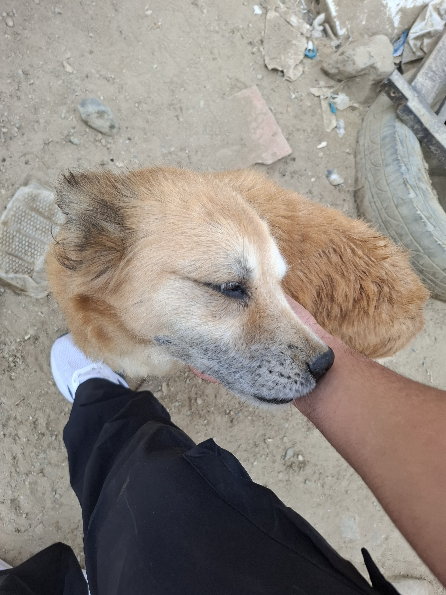
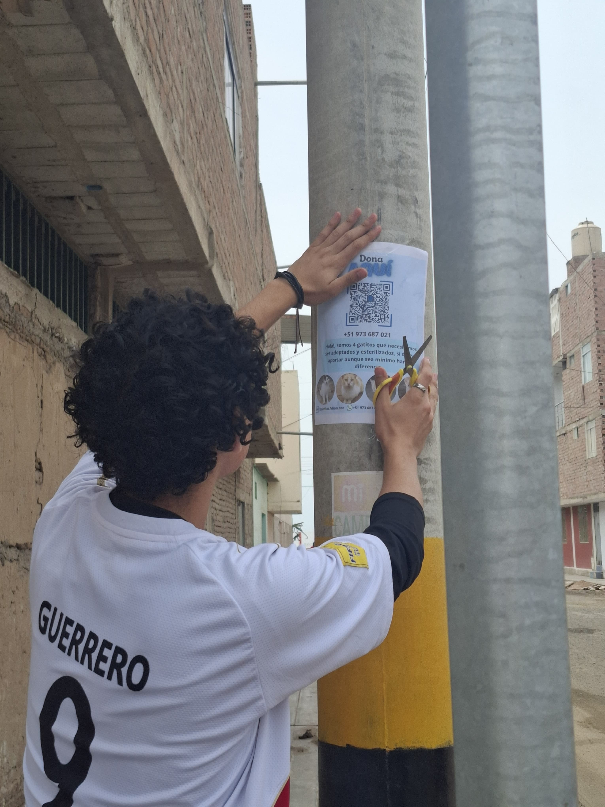
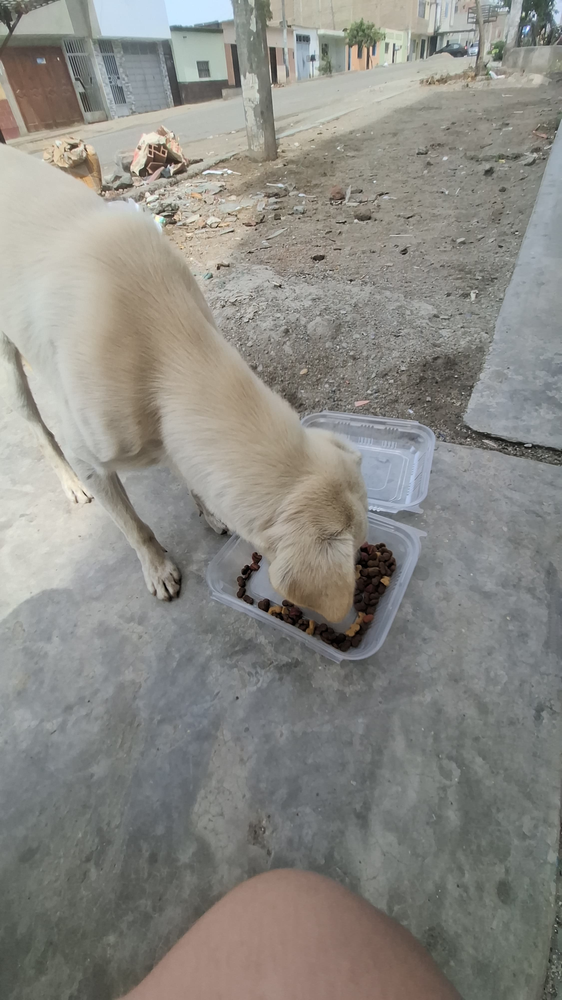
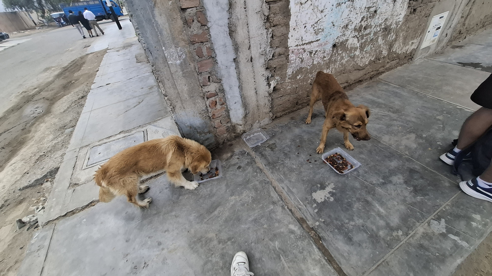
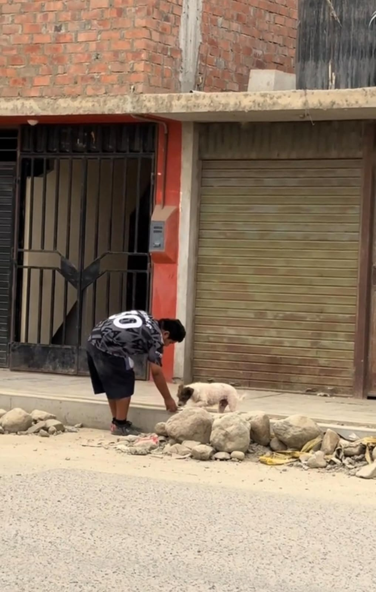
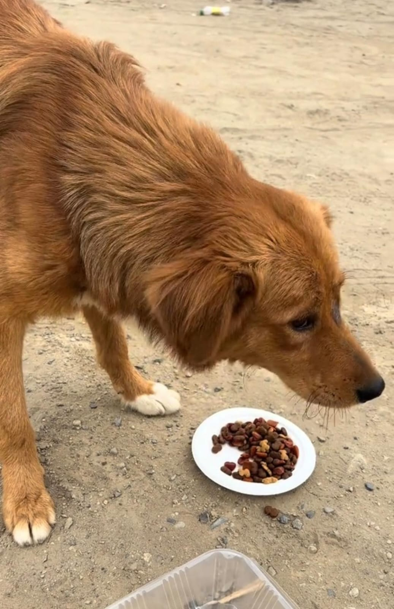
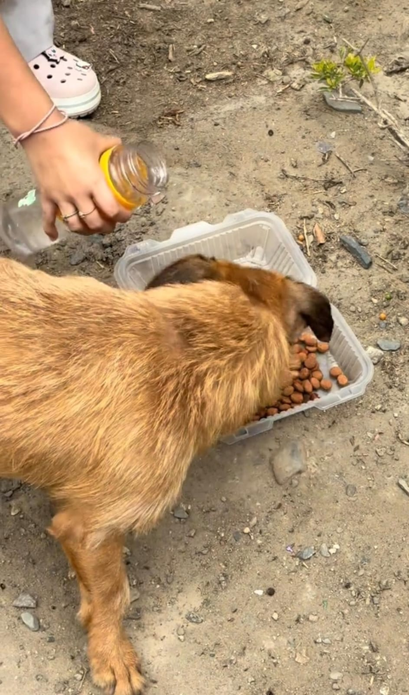
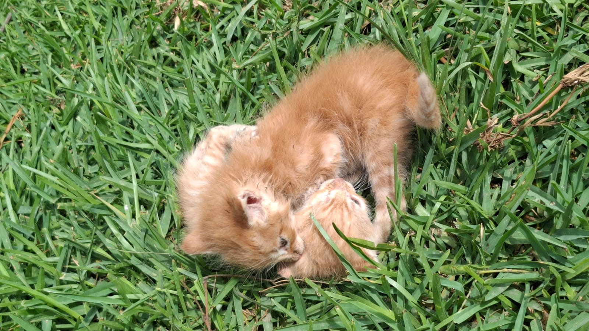
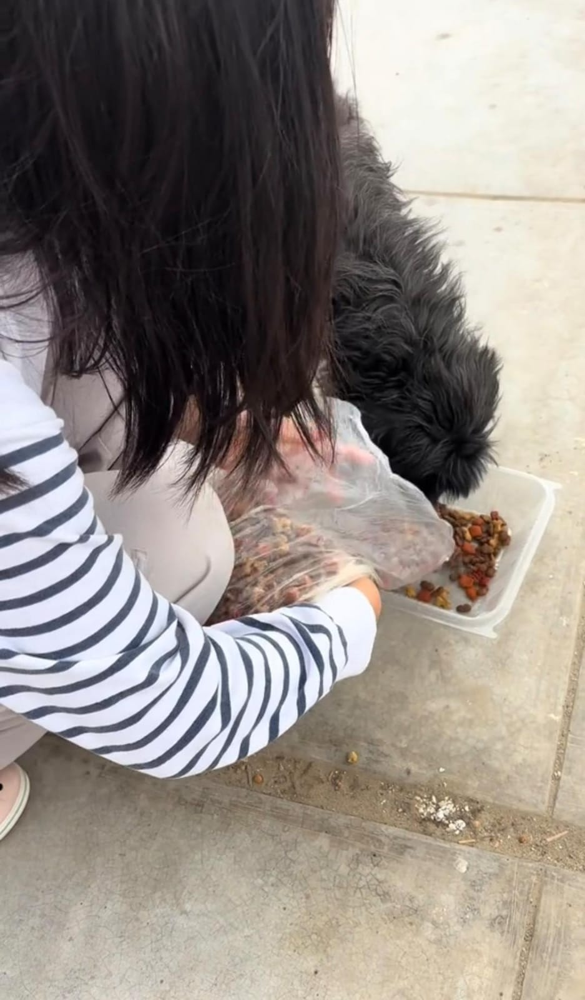
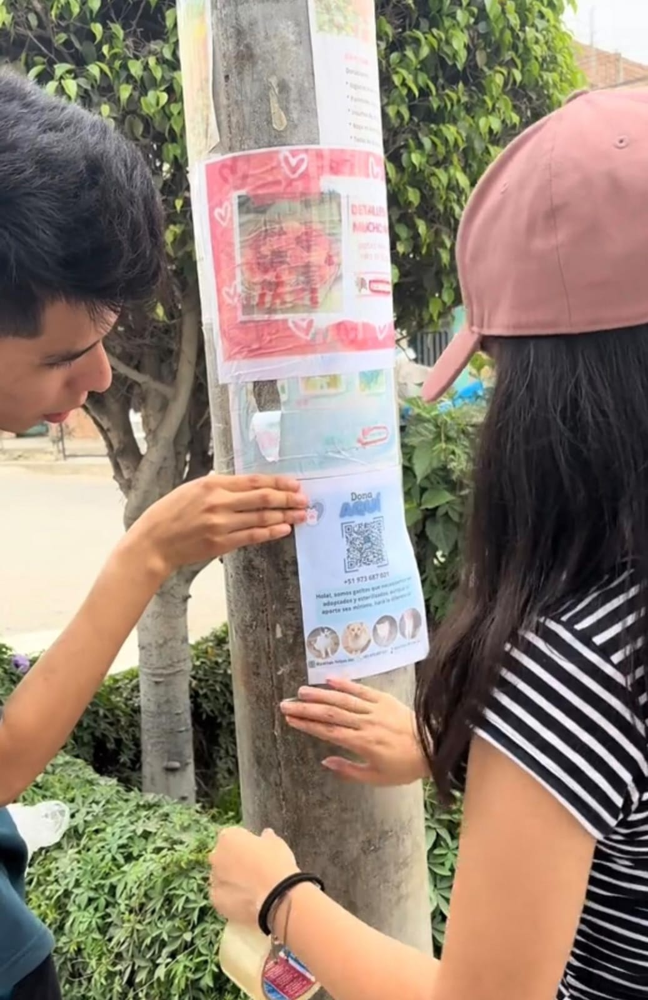
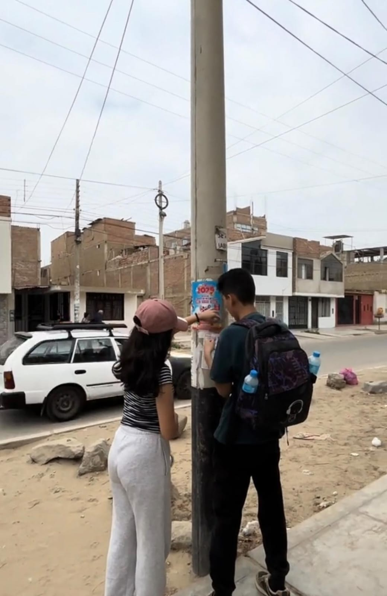
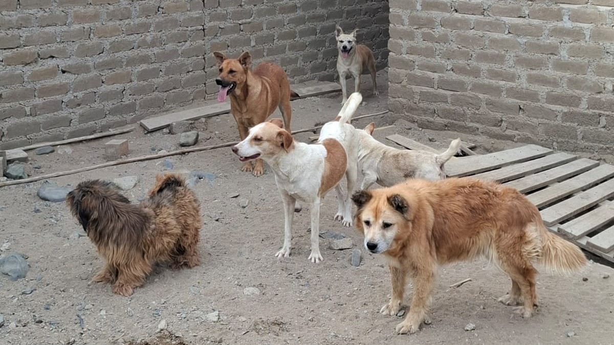
×

Cómo Unirte
Proceso de Coordinación
- Una vez que te unas al grupo de WhatsApp, preséntate brevemente.
- Los coordinadores compartirán información sobre la próxima caminata.
- Se acordará un punto de encuentro y hora para la caminata.
- El día de la caminata, reúnete con el grupo en el lugar y hora acordados.
- Sigue las instrucciones de los coordinadores durante la actividad.
Lo Que Puedes Traer
Aunque no es obligatorio, si deseas puedes traer lo siguiente para ayudar durante la caminata:
- Comida para perros o gatos
- Agua fresca
- Recipientes desechables para servir comida y agua
- Toallas o paños para limpiar a los animales si es necesario
- Correas extra por si encontramos animales que necesiten ser rescatados
Recuerda que lo más importante es tu presencia y disposición para ayudar.
¿Listo para hacer la diferencia?
Cada paso que das con nosotros es un paso hacia un futuro mejor para los animales de la calle. ¡Únete a nuestras caminatas y sé parte del cambio!
Unirme Ahora